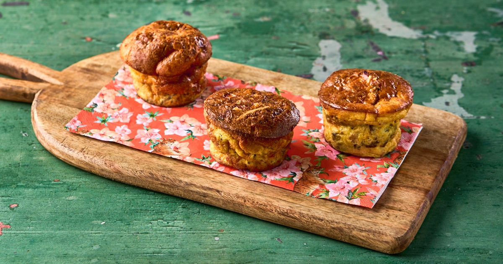

Deze mini gehaktbroodmuffins zijn een perfect voorgerecht: lekker, makkelijk te maken en ideaal voor een buffet of borrel.

Tip Voeg geraspte kaas of fijngehakte paprika toe voor extra smaak en kleur. Perfect te combineren met een frisse salade.